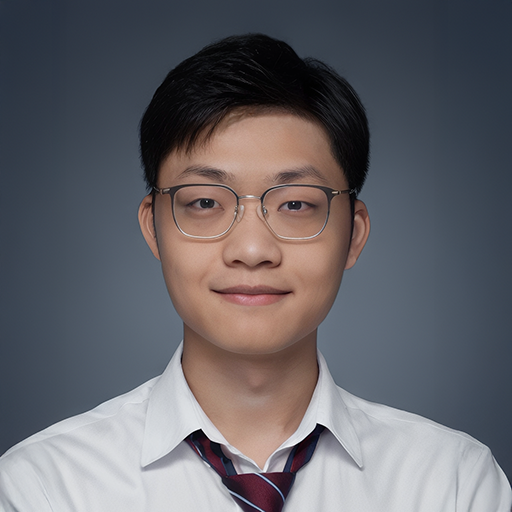

- [2022/07] We released LightViT [code] at arXiv.
- [2022/05] We released DIST [code] and MasKD [code] at arXiv.
- [2022/04] One paper (QAS) was accepted to Nature Partner Journals Quantum Information (NPJ QI).
- [2022/03] Two papers (GreedyNASv2 & DyRep) were accepted to CVPR 2022.
- [2022/01] One paper (ReLoss) was accepted to ICLR 2022.
-
[2021/12] We released
MMRazor - a model compression toolkit for model slimming and AutoML, which includes 3 mainstream technologies NAS, pruning, and KD. MMRazor can be easily applied to various projects (e.g., MMDet and MMCls) in OpenMMLab. -
[2021/11] We released GreedyNASv2 at
arXiv. -
[2021/03] One paper about NAS was accepted to CVPR 2021. The NAS benchmark in our paper was released at
github. - [2021/01] One paper about channel number search (pruning) was accepted to ICLR 2021 as spotlight.
-
[2020/11] One paper about NAS was released at
arXiv. Our TopoNAS explicitly learns the topology for differentiable NAS (DARTS), and enjoys significant efficiency improvement on obtained architectures. -
[2020/10] One paper about quantum architecture search (QAS) was released at
arXiv. Our QAS implicitly learns a rule that can well suppress the influence of quantum noise and the barren plateau. - [2020/02] One paper about NAS was accepted to CVPR 2020.
Tao Huang
Ph.D. Student Email: huntocn [at] gmail.com
|
 |
Biography
My name is Tao Huang (黄涛). I am a 2nd-year PhD student at The University of Sydney, advised by Prof. Chang Xu.
In 2020, I received my Bachelor's degree in Computer Science at Huazhong University of Science and Technology, China.
My major research interests lie within model compression algorithms, such as
- Efficient architectures: NAS, pruning, Rep, handcraft
- Knowledge distillation (KD)
News
- [2023/09] One paper (DiffKD) was accepted to NeurIPS 2023.
- [2023/07] One paper (AKD) was accepted to ACM MM 2023.
- [2023/05] We released DiffKD and AKD at arXiv.
- [2023/01] One paper (MasKD) was accepted to ICLR 2023.
- [2022/09] One paper (DIST) was accepted to NeurIPS 2022.
Publications
*: equal contribution.First-authored papers:
-
NeurIPS Knowledge Diffusion for Distillation
Tao Huang, Yuan Zhang, Mingkai Zheng, Shan You, Fei Wang, Chen Qian, Chang Xu
Advances in Neural Information Processing Systems (NeurIPS), 2023. -
ACM MM Avatar Knowledge Distillation: Self-ensemble Teacher Paradigm with Uncertainty
Yuan Zhang, Weihua Chen, Yichen Lu, Tao Huang, Xiuyu Sun, Jian Cao
Proceedings of the 31th ACM International Conference on Multimedia (ACM MM), 2023. -
ICLR Masked Distillation with Receptive Tokens
Tao Huang*, Yuan Zhang*, Shan You, Fei Wang, Chen Qian, Jian Cao, Chang Xu
International Conference on Learning Representations (ICLR), 2023. -
NeurIPS Knowledge Distillation from A Stronger Teacher
Tao Huang, Shan You, Fei Wang, Chen Qian, Chang Xu
Advances in Neural Information Processing Systems (NeurIPS), 2022. -
NPJ QI Quantum circuit architecture search for variational quantum algorithms
Yuxuan Du, Tao Huang, Shan You, Min-Hsiu Hsieh, Dacheng Tao
Nature Partner Journals Quantum Information (NPJ QI), 2022.
-
CVPR GreedyNASv2: Greedier Search with a Greedy Path Filter
Tao Huang, Shan You, Fei Wang, Chen Qian, Changshui Zhang, Xiaogang Wang, Chang Xu
IEEE Conference on Computer Vision and Pattern Recognition (CVPR), 2022.
-
CVPR DyRep: Bootstrapping Training with Dynamic Re-parameterization
Tao Huang, Shan You, Bohan Zhang, Yuxuan Du, Fei Wang, Chen Qian, Chang Xu
IEEE Conference on Computer Vision and Pattern Recognition (CVPR), 2022.
-
ICLR Relational Surrogate Loss Learning
Tao Huang, Zekang Li, Hua Lu, Yong Shan, Shusheng Yang, Yang Feng, Fei Wang, Shan You, Chang Xu
International Conference on Learning Representations (ICLR), 2022.
-
ICASSP Data Agnostic Filter Gating for Efficient Deep Networks
Hongyan Xu, Xiu Su, Shan You, Tao Huang, Fei Wang, Chen Qian, Changshui Zhang, Chang Xu, Dadong Wang, Arcot Sowmya
IEEE International Conference on Acoustics, Speech and Signal Processing (ICASSP), 2022. -
CVPR Prioritized Architecture Sampling with Monto-Carlo Tree Search
Xiu Su*, Tao Huang*, Yanxi Li, Shan You, Fei Wang, Chen Qian, Changshui Zhang, Chang Xu
IEEE Conference on Computer Vision and Pattern Recognition (CVPR), 2021.
-
ICLR Locally Free Weight Sharing for Network Width Search
Xiu Su, Shan You, Tao Huang, Fei Wang, Chen Qian, Changshui Zhang, Chang Xu
International Conference on Learning Representations (ICLR, Spotlight), 2021.
-
CVPR GreedyNAS: Towards Fast One-Shot NAS with Greedy Supernet
Shan You*, Tao Huang*, Mingmin Yang*, Fei Wang, Chen Qian, Changshui Zhang
IEEE Conference on Computer Vision and Pattern Recognition (CVPR), 2020.


Manuscripts
-
arXiv Positive Label Is All You Need for Multi-Label Classification
Zhixiang Yuan, Kaixin Zhang, Tao Huang
arXiv preprint arXiv:2306.16016 (2023). -
arXiv LightViT: Towards Light-Weight Convolution-Free Vision Transformers
Tao Huang, Lang Huang, Shan You, Fei Wang, Chen Qian, Chang Xu
arXiv preprint arXiv:2207.05557 (2022). -
arXiv Explicitly Learning Topology for Differentiable Neural Architecture Search
Tao Huang, Shan You, Yibo Yang, Zhuozhuo Tu, Fei Wang, Chen Qian, Changshui Zhang
arXiv preprint arXiv:2011.09300 (2020).
Academic Services
Reviewer for Conferences:- Neural Information Processing Systems (NeurIPS), 2021-2023.
- International Conference on Learning Representations (ICLR), 2023.
- International Conference on Machine Learning (ICML), 2022-2023.
- Conference on Computer Vision and Pattern Recognition (CVPR), 2022-2023.
- International Conference on Computer Vision (ICCV), 2023.
- AAAI Conference on Artificial Intelligence (AAAI), 2023-2024.
- ACM International Conference on Multimedia (ACM MM), 2021-2023.
- IEEE Transactions on Neural Networks and Learning Systems (TNNLS)
- IEEE Transactions on Image Processing (TIP)
Talks
- TMLR Young Scientist Seminar@HKBU: "Knowledge Distillation from A Stronger Teacher", Jul. 2022. [Slides]
Education
-
Ph.D. student at School of Computer ScienceThe University of Sydney, Sydney, AustraliaJuly. 2022 – Present
Advisor: Prof. Chang Xu
-
B.E. in Computer Science and TechnologyHuazhong University of Science and Technology, Wuhan, ChinaSep. 2016 – Jun. 2020
Selected Experience
-
Dian Group, Wuhan, Hubei province, China
Team Leader of Realtime Face Detection & Alignment Project, AI GroupNov. 2018 – May 2019- Develop Android APP to inference face detection, tracking, and 106-point landmark models on mobile devices.
- Research on model acceleration (e.g., knowledge distillation, model pruning) and facial landmark (e.g., multitask learning, loss function, augmentation).
- Our proposed model archieves an inference speed of 5 ms / image on Huawei Mate20 Pro.
Core Member of Beibei Intelligent Customer Service Project, AI GroupFeb. 2018 – Nov. 2018- This project comes from Beibei Group Company, Beibei is the bigest mother-baby ecommerce platform in China. The task is to find optimal answers based on classifications of customer questions.
- Research and development on text classification and data augmentation, etc.
-
3D Printer Team, Wuhan, Hubei province, China
Topic: developing control algorithms for 3DP/FDM 3D printersGroup Learder of Embedded Control GroupOct. 2016 – Jan. 2019
Selected Awards
-
Outstanding Graduate award, Huazhong University of Science and TechnologyJun. 2020
-
Outstanding Graduate Thesis award, Huazhong University of Science and TechnologyJun. 2020